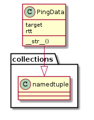
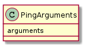
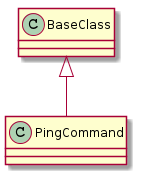

A Ping command pings and checks the response.
The PingData class is a namedtuple that holds the address that was pinged and the round-trip time for the ping.
| PingData |

The PingArguments class holds string constants for the ping-command.

The keys to the arguments dictionary are the values in apetools.commons.enumerations.OperatingSystem.
Example Use:
ping_args = PingArguments.arguments['android'] + '192.168.10.12'
The PingCommand issues the ping command and checks the outcome
| PingCommand([target, connection, ...]) | A ping is a simple ping-command. | ||
| PingCommand.arguments |
|
||
| PingCommand.expression |
|
||
| PingCommand.run([target]) | Executes a single ping, checks for a success, returns ping data if it succeeds. | ||
| PingCommand.__call__(target, connection) | Executes a single ping, checks for a success, returns ping data if it succeeds. |

Example Use:
ping = PingCommand('192.168.20.1')
print str(ping.run())
connection = SSHConnection('192.168.10.23', 'tester')
target = "192.168.30.1"
print str(ping(target, connection))